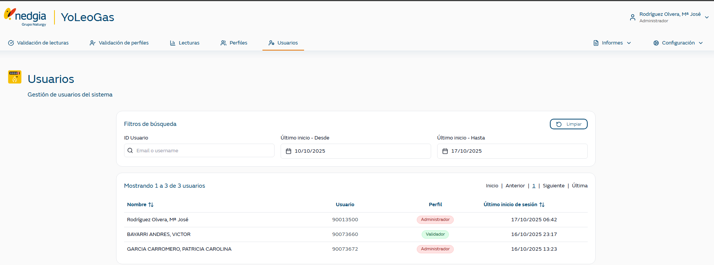

Desde esta pantalla los usuarios con rol Administrador podrán consultar todos los usuarios que utilizan la aplicación web de backoffice.
Por defecto al entrar se muestran todos los usuarios ordenados por la fecha de la última sesión, pero se pueden buscar usuarios por:
código de usuario
fecha desde del último acceso
fecha hasta del último acceso

Para los usuarios que cumplen los criterios de la búsqueda se muestra:
nombre del usuario (primer apellido, segundo apellido y nombre)
código del usuario
perfil del usuario
fecha del último acceso a la aplicación
Los resultados se pueden ordenar por el nombre del usuario (por el primer apellido) y por la fecha de último acceso.
La información que se muestra se recupera de la entidad USER.